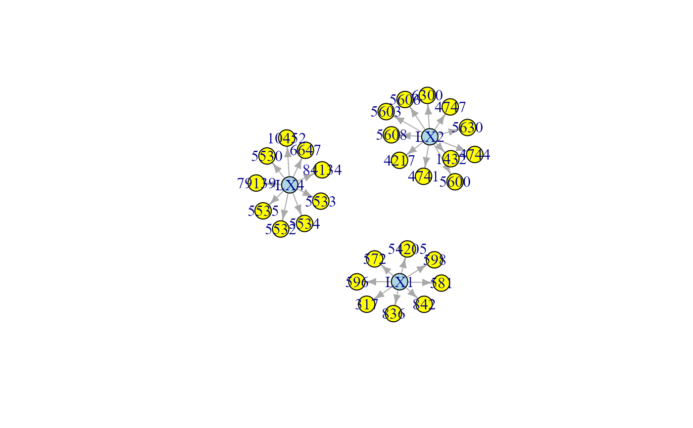

Topological graph clustering methods.
clusterGraph(graph, type = "wtc", HM = "none", size = 5, verbose = FALSE, ...)
Arguments
| graph | An igraph object. |
|---|---|
| type | Topological clustering methods. If type = "tahc", network modules are generated using the tree agglomerative hierarchical clustering method (Yu et al., 2015). Other non-tree clustering methods from igraph package include: "wtc" (default value; walktrap community structure with short random walks), "ebc" (edge betweeness clustering), "fgc" (fast greedy method), "lbc" (label propagation method), "lec" (leading eigenvector method), "loc" (multi-level optimization), "opc" (optimal communiy structure), "sgc" (spinglass statistical mechanics). |
| HM | Hidden model type. Enables the visualization of the hidden
model. If set to "none" (default), no HM is visualized.
For each defined hidden module:
(i) if |
| size | Minimum number of nodes per module. By default, a minimum number of 5 nodes is required. |
| verbose | A logical value. If FALSE (default), the processed graphs will not be plotted to screen, saving execution time (they will be returned in output anyway). |
| ... | Currently ignored. |
Value
If HM is not "none" a list of 3 objects is returned:
"gHM", subgraph containing hidden modules as an igraph object;
"membership", cluster membership vector for each node;
"gHC", the list of modules as igraph objects.
If HM is "none", only the cluster membership vector is returned.
References
Fortunato S, Hric D. Community detection in networks: A user guide (2016). Phys Rep; 659: 1-44. <https://dx.doi.org/10.1016/j.physrep.2016.09.002>
Yu M, Hillebrand A, Tewarie P, Meier J, van Dijk B, Van Mieghem P, Stam CJ (2015). Hierarchical clustering in minimum spanning trees. Chaos 25(2): 023107. <https://doi.org/10.1063/1.4908014>
See also
Author
Mario Grassi mario.grassi@unipv.it
Examples
# \dontrun{ # Install data examples, reference networks, and pathways #devtools::install_github("fernandoPalluzzi/SEMdata") library(SEMdata) G <- kegg.pathways$"Amyotrophic lateral sclerosis (ALS)" # Largest connected component G <- properties(G)[[1]]#> Frequency distribution of graph components #> #> n.nodes n.graphs #> 1 1 16 #> 2 3 1 #> 3 32 1 #> #> Percent of vertices in the giant component: 62.7 % #> #> is.simple is.dag is.directed is.weighted #> TRUE TRUE TRUE FALSE #> #> which.mutual.FALSE #> 47membership <- clusterGraph(graph = G, type = "wtc", HM = "LV", verbose = TRUE)#> modularity = 0.5588502 #> #> Community sizes #> 3 1 4 2 #> 4 8 9 11 #># }